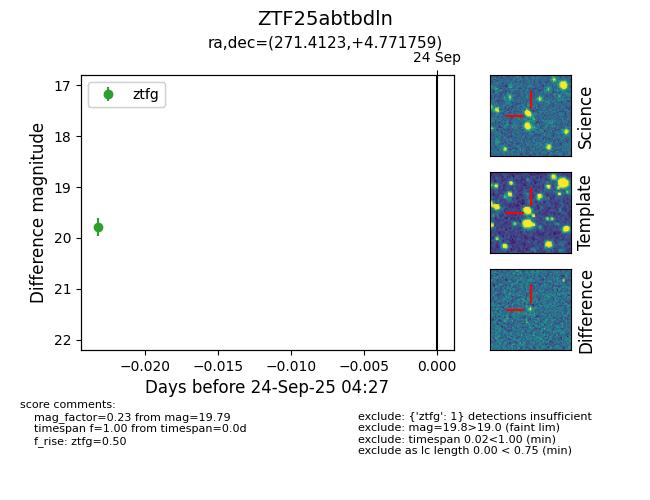

FINK: ZTF25abtbdln
Lasair: ZTF25abtbdln
ALeRCE: ZTF25abtbdln
ZTF25abtbdln (ztf,fink)
equatorial (ra, dec) = (271.4123,+4.77176)
galactic (l, b) = (31.9848,+12.35394)

last ztfg=19.79
1 ztfg detections